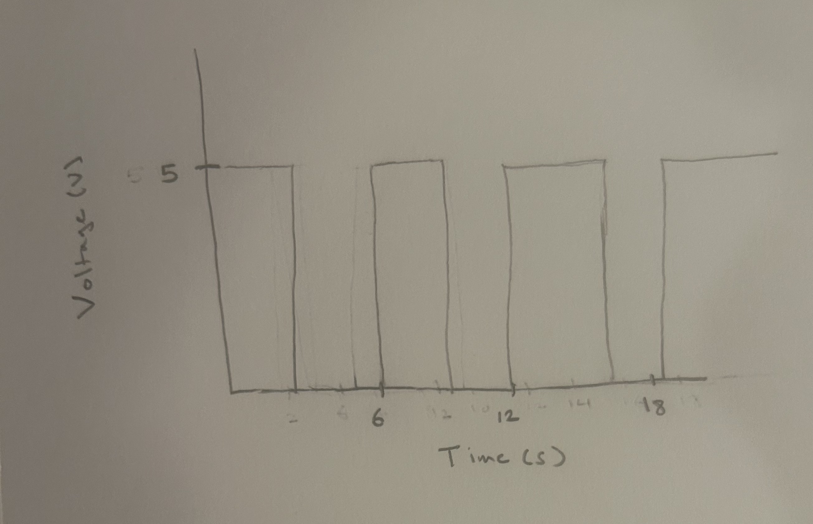

Circuit Operation

As you can see in the GIF, the motor's movement is entirely based on how close I am to the distance sensor. This means the faster I move up and down, the faster the motor moves.
For this assignment, we were tasked with creating a circuit using two external libraries. I decided to use the ultrasonic distance sensor and the servo motor libraries. I ended up making a circuit where the motor moves based on the distance between the ultrasonic distance sensor and any object.
This schematic is pretty simple since all I really had to do was decide what pins to use for both the distance sensor and the servo. Both also connect to power and ground.
// Servo and distance sensor libraries
#include <HCSR04.h>
#include <Servo.h>
// Pins for the distance sensor and servo
const int echoPin = 11;
const int trigPin = 12;
const int servoPin = 9;
// Max distance value used to calibrate distance sensor
float maxDist = -1.00;
// Defining the distance sensor and servo
UltraSonicDistanceSensor distanceSensor(trigPin, echoPin);
Servo myservo;
void setup() {
// Signals the start of calibration
pinMode(13, OUTPUT);
digitalWrite(13, HIGH);
// Calibrating the distance sensor for 5 seconds
while (millis() < 5000) {
// Finds the distance from an object to the sensor in centimeters (cm)
float distanceVal = distanceSensor.measureDistanceCm();
// If the distance is greater than the current max distance, it becomes
// the max distance
if (distanceVal > maxDist) {
maxDist = distanceVal;
}
}
// Signals end of calibration
digitalWrite(13, LOW);
// Sets servo pin to 9
myservo.attach(servoPin);
// Begins communication between computer and arduino
Serial.begin(9600);
}
void loop() {
// Measures distance from an object to the sensor
float distance = distanceSensor.measureDistanceCm();
// Forces distance to be max distance when it's close
// so that the servo doesn't constantly activate since
// the sensor fluctuates a small amount
if (distance >= maxDist - 2) {
distance = maxDist;
}
// Prints the distance from the sensor
Serial.print("Distance: ");
Serial.print(distance);
// Maps the distance to a value from 0 to 180 to get an angle
int angle = map(distance, -1.00, maxDist, 180, 0);
// Prints the angle that's mapped
Serial.print("\t angle: ");
Serial.println(angle);
// Moves the servo to that angle
myservo.write(angle);
// Waits for the servo to get into position
delay(100);
}
The code basically takes the distance sensed from the sensor and then translates it to an angle to which the servo motor moves to. The max distance found by the distance sensor is based on the 5 seconds of calibration.
As you can see in the GIF, the motor's movement is entirely based on how close I am to the distance sensor. This means the faster I move up and down, the faster the motor moves.
1. Say you are using a servo motor you attach to pin 9. In your loop() you have the following code:
void loop() {
for (pos = 0; pos <= 180; pos += 1) {
myservo.write(pos);
delay(100);
}
}
Draw a graph with the x-axis as time and the y-axis as voltage at pin 9 with respect to ground.
To be honest, I'm not sure if I entirely know what the graph would look like at each second but I know that as it goes from 0-180 degrees, the pulse width (time the voltage stays at 5 V) will increase.
2. Your input device is slightly broken, leading it to give us an erroneous reading 1% of the time.
How can we address this? Answer in (pseudo)code.
// Create an array with a size of 5.
// When reading from the distance sensor, fill the array with 5
// measurements.
// Take the median of the values and use that distance after
// sorting the array.
// Reset the array and then repeat for every 5 measurements.
3. Your input device is slightly noisy, leading the measurement to randomly deviate from the true
measurement up or down by 10%. How can we address this? Answer in (pseudo)code.
// Looking at the smoothing example in the arduino IDE:
// Create an array for the readings from the distance sensor
// with a size of 10. Initialize each index to 0.
// Make a variable called total which stores the sum of all
// numbers in the array.
// As the sensor reads distance, replace the current index with
// the read distance and updating total.
// Update what index we're on (adding 1 or wrapping back to 0) after
// doing so.
// Calculate the average distance by dividing total by 10 and then
// use that average.
4. AI Tools
I used AI tools specifically for question 1 since I was confused about how the graph would look like based on what we went over in class about PWM. I asked AI how PWM works with a servo motor and it gave me a description of how the pulse width changes depending on the angle the servo motor is going to.